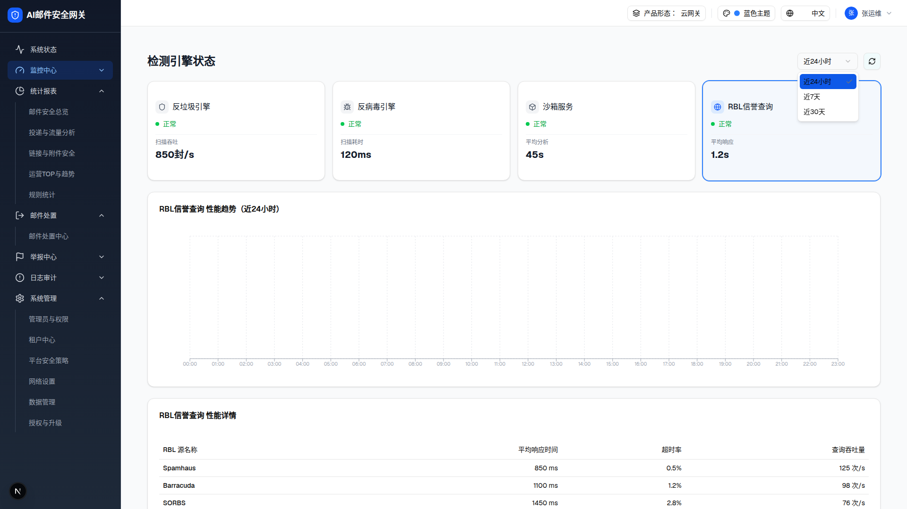
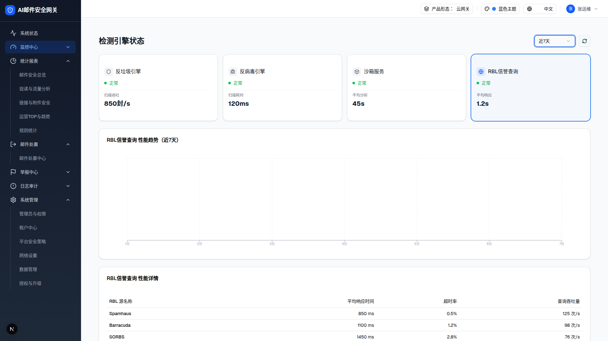

2 时间范围下拉打开态（浏览器实测）

下拉：近24小时（高亮）/ 近7天 / 近30天（注意：无「近1小时」）
切到「近7天」后（浏览器实测截图）

近7天：X 轴变为「1日~7日」7 个点，标题变为「反垃圾引擎 性能趋势（近7天）」；demo 现状详情表不变。【目标行为·2026-07-22 用户决定】详情表也需随范围变化（主文件差异 D-02，已解决）
三时间范围数据口径（TREND_MOCK_DATA 源码 + 实测）
| 时间范围 | 数据点数 | X 轴格式 | 联动区块 |
|---|
| 近24小时（默认） | 24 | 00:00 ~ 23:00 | 趋势图数据 + 卡片标题；demo 现状详情表不联动（generateDetailData 忽略 timeRange）。【目标行为·2026-07-22 用户决定】详情表也随范围变化（24h=6h时段×4 行 / 7d=日×7 行 / 30d=日×30 行） |
| 近7天 | 7 | 1日 ~ 7日 |
| 近30天 | 30 | 1日 ~ 30日 |
DOM 树比对结果（24h → 7d，浏览器实测）
| 比对项 | 近24小时 | 近7天 | 是否变化 |
|---|
| X 轴刻度数 | 24 | 7（1日~7日） | 是（数据集切换） |
| 图表标题 | …（近24小时） | …（近7天） | 是 |
| 详情表行数 | 4 | 4（内容不变） | 否（差异 D-02） |
| Select trigger 文案 | 近24小时 | 近7天 | 是 |
2 可交互时间范围切换预览（点击时间 Select → 趋势图 X 轴点数联动；明细表不变）
对齐 demo 差异 D-02：切换时间范围只影响趋势图数据点数（24h=24 点 / 7d=7 点 / 30d=30 点）与卡片标题，明细表不联动（demo generateDetailData 忽略 timeRange）。趋势图为 recharts 提取的网格+X 轴（无线段路径），此处按所选范围重算 X 轴刻度数以对齐 demo。
↓ 明细表（对齐 demo：切时间范围不变）
| 实例 ID | 统计时段 | 扫描吞吐 | 平均扫描耗时 | 队列堆积数 |
|---|
| antispam-01 | 00:00-06:00 | 820 封/s | 95 ms | 12 |
| antispam-01 | 06:00-12:00 | 890 封/s | 88 ms | 8 |
| antispam-01 | 12:00-18:00 | 950 封/s | 102 ms | 25 |
| antispam-01 | 18:00-24:00 | 780 封/s | 78 ms | 5 |